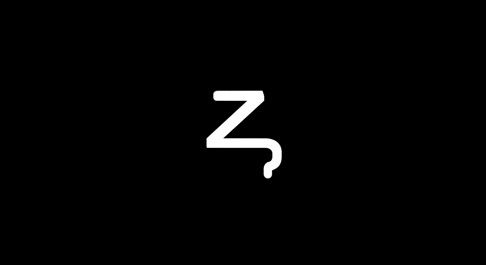

What is a paradox?
A paradox can be defined as a statement
contradictory of itself. A defiance of logic.
Why paradoxes?
We study paradoxes in order to challenge and
deepen our understanding of complex concepts.
Zeno?
Zeno of Elea: An ancient Greek philosopher,
famous for his intriguing paradoxes that continue
to fascinate and perplex scholars to this day.
Zeno's paradoxes?
Among Zeno's paradoxes is
The Dichotomy Paradox
Zeradox?
Zeradox is named in his honor.
Zeno + Paradox
Our Vision
We help our members to develop themselves
through our departements:
Maths, Physics & Computer Science